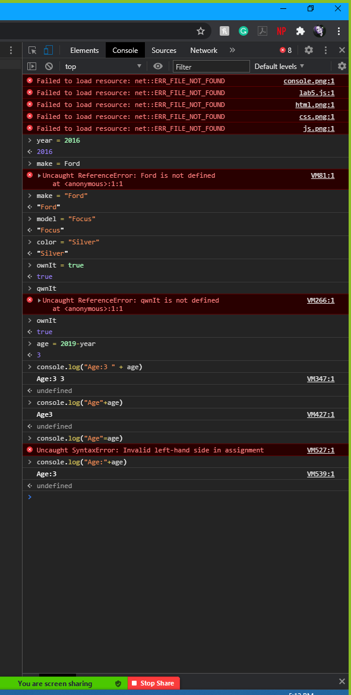

Lab 5: Data Types and Variables
By Tavia and Prisilla
Challenges
Task 1: Messing around with the Console.
Task 2: A JavaScript Program
Script Output
Problems
- We wtrote "document.WriteIn" with an I instead of ".writeln" with an l
- We didn't realize we needed to change the output script to white so we could see it, we didn't know what we were doing wrong.